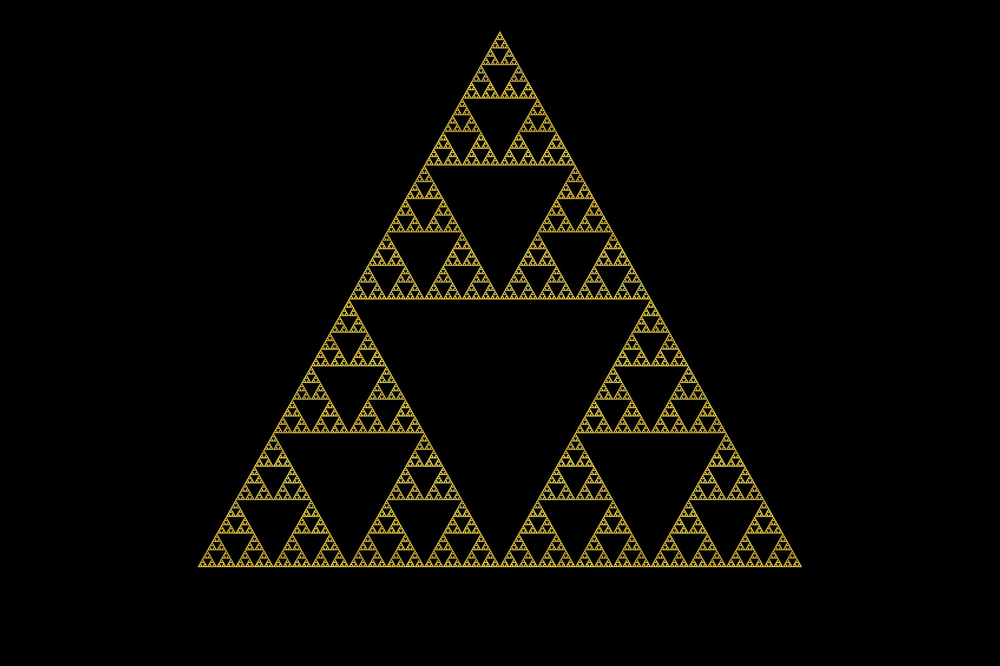

Sierpinski Triangle Generator

A Game of Chaos
This project was inspired by Numberphile's video on Chaos Games
Generator
Here you can see how the generator works, give it some time to populate the area with points. If you want to reset the game just use left click.
The Rules
- Start by creating three random points A, B and, C
- Draw a random point inside the triangle, this will be your starting point
- In order to play the game you'll base where you draw your dot by rolling a
six sided die. If the die
- If the die rolls a 1 or 2, start at A
- If the die rolls a 3 or 4, start at B
- If the die rolls a 5 or 6, start at C
- After determining your letter point, draw a line from the letter point to the starting point you placed earlier and put a dot in the middle of that line
- Roll the die again, then draw a line from your latest point to the rolled letter point and place another dot on the midpoint
- Repeat steps 4 and 5 until you feel you have populated the whole triangle with dots
As you can see, this game ends up creating the classic Sierpinski Triangle fractal.
Code
Here is the code to the project, following the mentioned steps above. This project uses the Processing library which you'll need if you'd like to run this in your own environment.